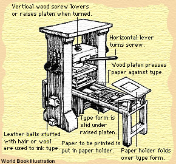

Printing
|
|
|
The printing process
A master metalworker casts hundreds of pieces of type for individual letters and symbols. Our editor, Jean Fontenay, selects the best copy of the book to be printed.
Our typesetter assembles the type pieces in a frame.
The pressman puts the type and paper in place, inks the type, and works the press.
|
This printing press can print 300 sheets in just one day!
 |